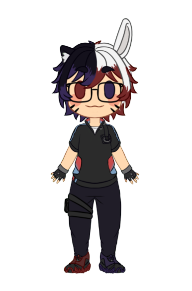

Vtuber Aizen Nozomi, Quimera Cósmica Guardião do Multiverso que busca encher o Mundo de Esperança e Diversão
Sobre Aizen Nozomi

O que você encontra nas lives do Aizen?
- 🎮 Gameplays de Pokemon e Variadas
- 💬 Bate-papo descontraído com os fãs
Quando assistir?
Aizen Nozomi faz lives regularmente nos seguintes dias:
- 📅 Segunda e Quarta às 10h
Redes Sociais
Sobre Aizen
Olá! Eu sou Aizen Nozomi,um ser cosmico em forma de quimera que tem como objetivo encher o multiverso de esperança e equilibrio.Espero que você faça parte do meu esquadrão conhecido como Nozomi Fighters e juntos espalhar esperança para todos.
— Aizen Nozomi (@AizenNozomi) August 9, 2023
< #Vtubers #VtuberBr #VtuberUprsing > pic.twitter.com/xvtByqfl2l